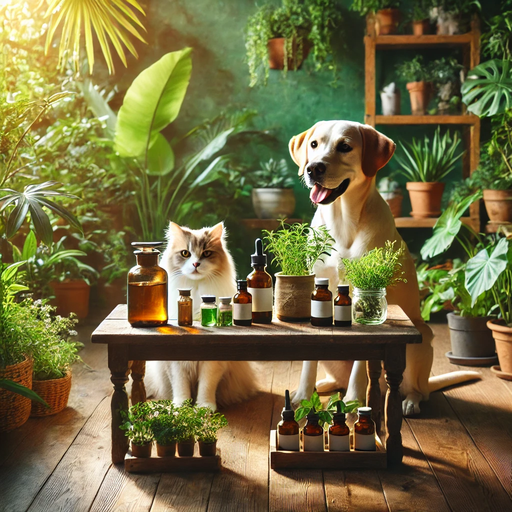

Inicio
Veterinários
Loja
Raças
Videos
Sobre o Site
O intuito deste site é auxiliar tutores para cuidar e prevenir doenças em seus animais. Com base na Medicina Natural, desenvolvi este projeto e site com minhas ideais .
